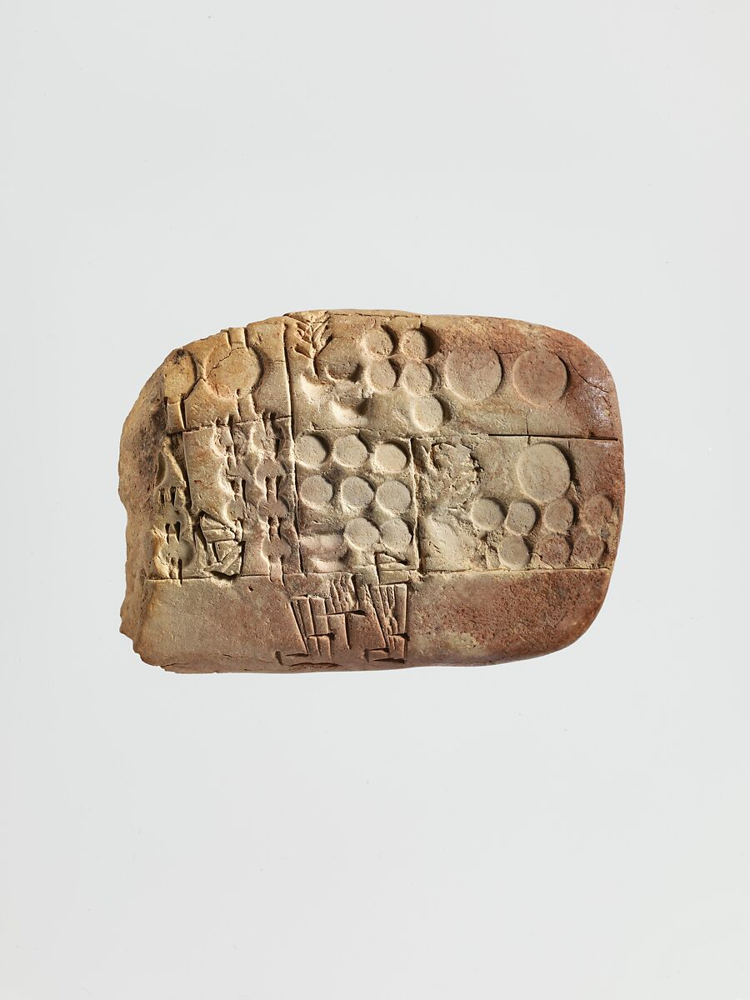

Objects that function as documents, or systems of documents, by showing, encoding and recording information.

A datartefact is any object — physical or digital — that carries data, intentionally or not. Understanding objects as data sources changes how we read and interpret the world.
Data is always stored in something — a clay tablet, a punch card, a server rack. The material support shapes what can be recorded, how it degrades over time, and who has access to it.
Bowker and Star argue that every classification system encodes values and power. The book reveals the hidden politics of deciding what counts — and what does not.
Before any enumerator knocks on a door, someone has decided which categories matter. This entry traces how the census has always been an instrument of governance, not just measurement.
Dead reckoning estimates position from a known point using speed, direction, and time. A model for historical data work: no ground truth, just accumulated inference — and an honest accounting of the error rate.
Gitelman's collection dismantles the idea that data can ever be raw. Each essay shows how datasets are products of instruments and choices — and why pretending otherwise leads to bad analysis.
A shipping manifest is a list of goods, weights, origins, destinations — and one of the richest sources of historical data we have. Aggregate enough and trade routes emerge, networks solidify.